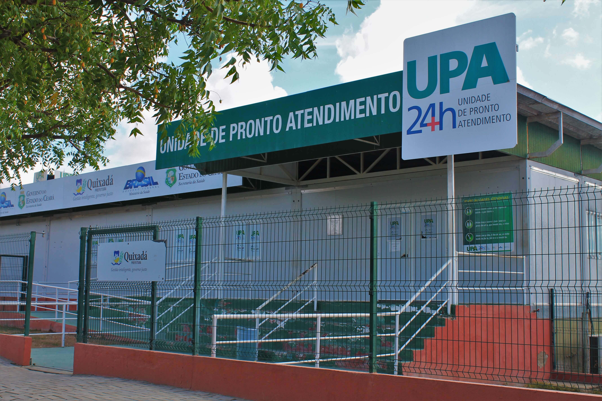

O que levar
Documento com foto ou certidão, cartão SUS, comprovante de residência quando pedido, lista de medicamentos em uso e exames recentes em papel ou foto.
UBS é porta de entrada do SUS: acolhimento, consultas agendadas, vacina e encaminhamentos. UPA é para urgência; SAMU (192) é para emergências.
Documento com foto ou certidão, cartão SUS, comprovante de residência quando pedido, lista de medicamentos em uso e exames recentes em papel ou foto.
Chegue cedo se for demanda espontânea; leve água e proteção solar. Idosos e gestantes podem perguntar na recepção se há prioridade local.
Substitua o # nos botões “Ver no mapa” pelo link oficial da prefeitura ou pelo endereço copiado do Google Maps / OpenStreetMap.
Linha nacional de orientação sobre o SUS, agendamentos em alguns municípios e dúvidas gerais. Horários e escopo variam — confirme no atendimento.

Endereço: Rua José Eneas Monteiro Lessa
Atendimentos: Clínico geral, pediatria, ginecologia, enfermagem e odontologia
Serviços: Vacinação, pré-natal, preventivo, hipertensão/diabetes e visitas domiciliares
Horário: A confirmar
Ver no mapa
Endereço: Distrito de Custódio
Atendimentos: Consultas médicas, odontologia e enfermagem (pré-natal, puericultura)
Serviços: Vacinação, coleta de exames básicos, medicamentos e doenças crônicas
Horário: A confirmar
Ver no mapa
Endereço: Av. José Caetano, S/N — Planalto Renascer
Atendimento: Urgência e emergência 24h
Serviços: Consultas de emergência, exames laboratoriais, raio-X e estabilização
Horário: Aberto 24 horas
Ver no mapa